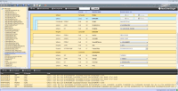
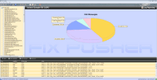
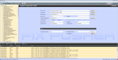

About FIX Pusher |
|
|
FIX Pusher is a tool for developers and administrators working with
the Financial Information eXchange ("FIX") protocol. The FIX
protocol is an industry driven standard for the electronic
communication of trade related messages, released and maintained by
FIX
Protocol, Ltd. FIX Pusher can send and receive FIX messages. It supports you simulating workflows with third party systems speaking the FIX protocol. The application acts as acceptor or initiator. FIX Pusher can interpret and modify customized data dictionaries containing user defined fields. The tool supports FIX versions 4.0 - 5.0 SP2. The application ships with the option for exporting message details into Excel sheets and graphical analysis of message logs. FIX Pusher is a 100% Java open source implementation running on Windows, Linux/Unix and Mac OS. It requires JRE version of 1.6 or higher for proper functioning. This software is published under the GNU Lesser General Public License, Version 2.1 (LGPLv2.1). Author: Alexander Pinnow Test: Tobias Fersch |
 |
|  | |
|  |
{kind=link}
{kind=link}
{kind=link}